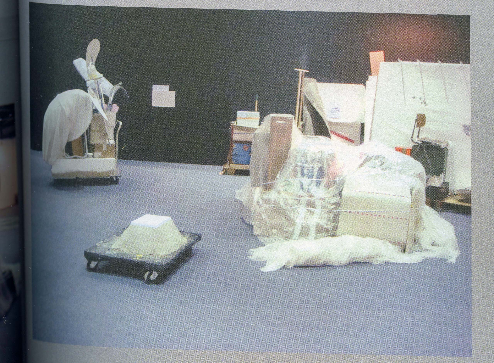
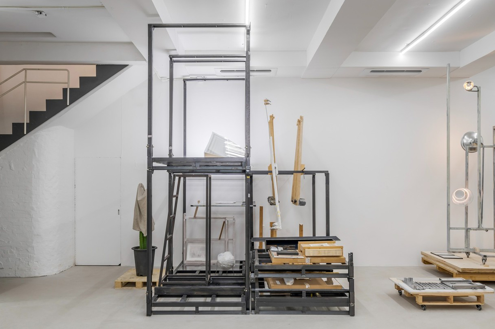

대화 (2)
<1. 가르치는 일에 대하여
2. 동현이 되돌아보는 Love Your Depot
3. 물질의 내러티브에 귀를 기울이기
4. “이걸 왜 버려요? 작품 좋은데, 서울에서 전시해요.”
5. 작가 정서영에게 잘 해주기 프로젝트: Warming And Humidifying
.
.
.
.
.
.
.
.
.
.
.
.
.
.
.
.
.
.
.
.
.
.
.
.
.
.
.
.
.
.
1. 가르치는 일에 대하여
재훈: 이 녹차 빙수, 먼저 나온 이 팥빙수를 보고서는 기대하지 못했던 비주얼이에요.
동현: 그러니까, 완전 다르게 나왔네요.
정서영: 이 떡은 동현이랑 나랑 먹고 저 떡은 시원과 재훈이 나눠 먹어요.
재훈: 물통은 어디서 사셨어요?
정서영: 물통, 인터넷이요. 재질 이름이 뭐라고 하더라? 젖병 만드는 재질이래요. 내가 물 없이는 못 다니는데 그러다 보니까 페트병을 너무 많이 쓰게 되더라고요. 텀블러는 너무 무겁고 부피가 커서 고민하며 열심히 찾아보니 요새 나온 ‘링티’라는 음료의 병이 지금 이거랑 비슷하게 생겼거든요. 그래서 ‘이렇게 생긴 물병은 없을까?’ 하고 찾아보니까 있더라고요.
재훈: 검색을 되게 잘하시나 보아요.
정서영: 잘하나? 검색하다 보면 속도도 늘고 촉도 생기고 그러지 않아요? 요근래의 나는 모든 걸 인터넷 쇼핑으로 끝내는 경우가 많아요.
시원: 책 같은 물건이랑 같이 넣기 편하겠어요.
정서영: 맞아요, 닦는 데 좀 어려움이 있지만 가방에 딱딱 넣을 수 있어요.
재훈: 저의 경우 원하는 상품을 인터넷에서 찾으려고 할 때 그 검색의 과정이 너무 지난하게 느껴져 시도를 잘 안 하거든요. 검색을 잘하신다고 말씀드린 게 원하시는 모양의 물병을 기어코 찾아내셨다. 👍
정서영: 하다 보면 빨라지는 거죠. 그리고 네이버에 ‘쇼핑 렌즈’라는 기능이 있어요. 어떤 모양의 물건과 비슷한 걸 사고 싶을 때, 그 물건의 사진을 찍어서 인터넷에 업로드하면 비슷한 유형의 상품이 쫙 떠요.
동현: 저도 비슷한 기능 알아요. 제가 요즘 아동미술 알바를 하는데요. 어떤 특정한 스타일의 이미지를 원하는 친구가 있으면, 그 스타일의 이미지를 하나만 포털 사이트 검색 렌즈에 올려봐요. 그러면 그거랑 유사한 스타일의 작품이 주르륵 떠요. 아이들에게 이미지 자료를 찾아줄 때 용이해요.
정서영: 언제는 그런 식으로 검색을 하다가, 그냥 내 작품 이미지 올리고 ‘~와 유사한 작가의 작품 이미지’로 검색을 했는데 모양 자체는 뚜렷이 비슷한 점이 없는 내 작품이 3개가 올라와서 너무 소름 끼친 적 있어요.
동현: 일상 속에 적용이 되어 있네요.
시원: 알바하니까 생각났는데, 저 여기 오기 전에 궁금했던 것이 있었어요. 많은 작가들이 작가 직업을 지속하기 위해서나 지속하면서, 여러 직업을 병행하며 작업을 하잖아요. 작가님 《오늘 본 것》 도록에서 독일 기계 부품 공장에서 일하셨던 일화를 말씀하시는 걸 봤었는데, 작업 하시면서 또 어떤 일을 같이 하셨었는지 궁금해요.
정서영: 독일에서 살 때 생활비를 벌기 위한 일은 여러 가지로 많이 했죠. 건축 사무실에서 모델 만드는 일도 했었고, 소시지 구워 파는 일도 했었고, 공장에서 기계 조립하는 일도 했었어요. 그 후 한국으로 돌아와서는 주로 학교 강사만 했던 것 같아요.
재훈: 학교에서 강사 일을 하시다가 부교수나 정교수 같은 자리까지는 계속하시지 않은 거죠?
정서영: 학교에서 교수직을 갖는 일은 강사로서 강의만 하는 것과 당연히 연결되는 것은 아니에요. 교수가 되려면 따로이 지원 시스템을 거쳐야 하는데 나는 완전히 직을 갖는 일에 대해서는 별로 자신이 없어서 그렇게는 안 했어요. 학교에서 교수직을 한다는 것은 단순히 학생만 가르치는 게 아니라 굉장히 많은 할 일과 의무, 책임 등으로 시간을 보내야 한다는 것이거든요. 학교를 운영하기 위해서는 학생 전체를 데리고 가야 하는데 그걸 위해서는 사람과의 관계를 잘 맺어나가는 능력도 있어야 하고요. 내가 갖지 못한 능력을 요구하는 직종의 일을 어떻게 하겠다고 할 수가 있겠어요. 가르치는 일만 한다면 모르겠는데 그것보다 더 많은 일을 해야 되잖아요. 그것에 대한 자신은 별로 없었어.
재훈: 그래도 하셨으면 인기 많으셨을 것 같아요. 제 주변 학우 중에서 작가님 좋아하는 사람이 엄청 많거든요. 학생들뿐만 아니라 미술계 종사자 중에서도 작가님을 좋아하는 사람은 무척 많다고 느껴요.
정서영: 그런가요? 어쨌든 나는 가르치는 일을 통해서 되게 많이 배웠어요. 내가 학교에서 가르치는 일을 시작한 게 아마 97년부터 일거에요. 그때 계원, 중대, 서울대에서 가르쳤고 잠깐 서울 예고에서도 있다가 한예종으로 갔거든요. 내가 한예종 초창기부터 가르치기 시작했는데 그렇게 생각해 보면 꽤 긴 시간 동안 교직에 있었던 셈이죠. 젊었을 때 가르칠 때는 잘 몰랐는데, 가르치는 일에 대한 경력이 한 중반기쯤 오니까 사실은 내가 가르치면서 굉장히 많은 걸 배웠다는 걸 알았어요.
왜냐하면 학생들하고 대화를 잘 나누기 위해서 자꾸 생각을 하고 말을 고르다 보니까 나 스스로 이해하지 못했던 것들을 어느 순간 얼추 명료하게 설명할 수 있게 되더라고요. 학생들에게 전달하기 위해 특정 문제를 자꾸 생각하다 보니까 그 생각이 나한테 문득 가까이 와서 나를 들여다보게 하기도 하고요.
또 학생들의 이야기를 계속 들어야 하잖아요. 그러다 보니 듣는 일에 열심히 집중할 수 있게 되고 여러 종류의 작품을 감상할 수 있게 됐죠. 왜냐하면 학생들이 여러 종류의 작업을 하다 보니까 그 모든 작업에 대해서 잘 듣고 얘기를 나눠야 하잖아요. 여러 방면의 작품에 대해 감상할 수 있고 접근 가능해진 것이 교직에서 가르치는 일을 하면서 얻게 된 능력이에요.
동현: 저도 정서영 선생님 수업을 대학원에서 두 학기 들었는데요. 선생님의 수업은 한 학생과 나누는 이야기의 시간이 훨씬 길고 밀도가 높았어요. 그래서 수업에서 그 이야기를 듣고 나면 당시의 대화 내용이 정말 오래 가요. 깊숙이 꽂히는 거죠. 그렇기 때문에 정확한 워딩은 희미해지더라도 그 내용은 계속 지니고 있어요.
재훈: 수업의 규칙을 따로 설정하신 건가요? 아니면 이야기를 진득하게 나눠서 그 밀도까지 닿은 건가요?
동현: 규칙이 따로 있지는 않았어요.
정서영: 나는 수업에서 내가 갖고 있는 것만을 가르치지 않아요. 나의 것을 가르치는 건 한계가 있기 때문에 대화를 나누고 있는 사람의 이야기를 듣는 일에 집중하죠. 그 사람이 갖고 있는 것의 스펙트럼을 넓히는 게 나의 몫이니까요. 그러기 위해서는 내가 지금 누구랑 얘기하고 있는가를 파악해야하기 때문에 시간이 걸리는 거예요. 물론 학생의 포트폴리오를 보고 정보를 얻기도 하지만 이야기를 끌어내고 듣는 시간이 필요하니까 기다려야 되고, 또 오해도 있고, 그럼 다시 또 돌아가야 하는 그런 대화의 시간이 길어요.
제가 지금 과기대에서 3시간짜리 수업을 하고 있는데 한 번에 한 2명 정도밖에 얘기를 안 해요. 나머지 학생들은 그 대화를 다 같이 듣고요. 왜냐하면 듣는 것이 굉장히 중요하거든요. 다른 사람 작품을 감상하는 것과 비슷하게, 무슨 얘기를 나누는가를 듣는 것 또한 다른 사람의 작업 과정에 깊이 들어가 보는 거잖아요.
내 수업에 규칙은 별도로 없어요. 가르치는 내용의 커리큘럼이나 매뉴얼이 있을 수가 없는 게 나는 대상에 따라 움직이는데, 매 수업마다 그 대상이 바뀌잖아요. 이야기를 길게 나누면서 나도 그 사람의 작품에 대한 감상을 깊게 하고, 또 내가 깊게 감상하니까 듣는 학생도 많은 얘기를 끌어내야 하고 기억해 내야 하고 이러는 과정을 같이 거치게 되니까 시간이 많이 들죠.
재훈: 3시간에 2명이면 진짜 집중해서 이야기 나눠볼 수 있겠네요.
동현: 3시간을 넘어서 4~5시간 진행되는 경우도 있었어요.
재훈: 제가 다니는 학교에서는 ‘3초 피드백'이라고, 교수자가 자신이 모르는 분야의 작업에 대해서는 말을 꺼내지 않는 분위기의 수업도 있다고 알고 있거든요. 방금 들은 이야기랑 되게 상반되네요.
정서영: 내가 이번 학기부터는 안 그러려고 시간을 보면서 하고 있어요. 생각해 보니 또 너무 자세하게 작업에 대해 말하는 게 안 좋은 점도 있어서 그 시간을 좀 쳐내려고요. ‘내가 저 학생의 저 부분에 미련을 갖지 말아야지. 너무 걱정하지 말자.’ 뭐 이런 생각으로요. 그걸 또 털어내면 시간이 조금 줄더라고.
재훈: 작가님이 최근 인터뷰 중에서 ‘아름다움이란 무엇이라고 생각하십니까?’ 라는 질문에 답변하신 내용이 생각나네요. ‘작업을 충분히 하면 아름답다고 생각해요.’ 이렇게 답변하셨거든요. 근데 그게 정말 맞는 말이죠. 작업을 충분히 하면 아름답잖아요. (웃음) 근데 그렇게 충분하기까지 작업하려면 3시간 넘는 시간 동안 두 명하고만 이야기한 밀도처럼 해야 되지 않나? 하는 생각이 드네요.
정서영: 학생들하고 대화를 나누는 양상은 시간에 따라 변화가 오는 것 같아요. 젊었을 때는 훨씬 더 격렬했던 것 같은데 나이가 들면서는 그런 격렬함이나 감정의 동요가 조금 사라지더라고요. 감정의 동요는 없지만 좀 집요함만 남아 있다든가 하는 변화. 그런 변화는 누구에게나 일어나겠지만 수업을 하는 방법이나 관점이 조금씩 변한 건 맞아요. 그건 그렇고 재훈은 이주요 선생님의 작업 중 직접 본 것은 주로 이 Love Your Depot를 통해서겠네요. 그 이전 작업들은 본 적이 없겠어요.
2. 동현이 되돌아보는 Love Your Depot
재훈: 그 이전 작업은 모두 책으로 봤어요. 다들 이번 전시 어떻게 보셨나요?
동현: 저는 이주요 선생님의 Love Your Depot 연작 (이하 <러브 유어 디포> 혹은 ‘디포'로 기재함) 에서 지난 프로젝트까지는 팀디포의 멤버로서 참여하면서 전시가 만들어지는 과정을 현장에서 보던 입장에 있었는데요. 이번 전시 《Of Hundred Carts and On》에서는 순수한 관객으로서 전시의 결과만을 관람할 수 있었어요. 그리고 선생님 이주요를 작가 이주요로서 본 첫 번째 전시였습니다.
최근의 전시들을 보다 보면, 작품과 전시의 만듦새 혹은 마감, 표현과 관련한 것들이 얼핏 가공품처럼 보인다는 생각을 자주 했었고, 직접 눈으로 봤음에도 마치 작품들을 손으로 쓰다듬은 것 같은 즐거움을 발견하지 못한 채로 조금은 헛헛하게 전시장을 나오는 경우가 있었어요. 반면 이주요의 이번 전시에서는 철사가 꼬아져 있는 구석구석까지 보다 보니까 재미가 있더라고요. 그래서 전시를 오랫동안 볼 수 있었네요.
전시가 열리는 기간 동안 이 전시장에서 발생하는 사물의 미세한 변화를 여러 번 관찰할 수 있었고, 이 사물의 변화가 전시장에서 흐른 시간의 양태를 알려주었어요. 예를 들어 제가 처음 전시를 보러 온 날에는 <턴 디포> 꼭대기에 나란히 걸쳐있는 전우경 작가의 파이프 작품 <Fence>가 더 가지런하게 놓여 있었는데 오늘 다시 보니까 조금씩 삐뚤빼뚤하게 움직였더라구요. 그래서 ‘이곳에선 시간이 흐르고, 계속 조금씩의 변화가 있으니 전시장의 모습도 계속 달라지겠구나’ 라는 생각을 하며 전시를 오래 보았네요.
정서영: 지금 동현이는 ‘디포’가 벌써 몇 번째잖아. 국립현대미술관에서 처음 시작할 때부터 계속 참여를 하던 입장에서 이 전시를 본 거잖아요. 이 프로젝트의 흐름을 쭉 봐오며 알게 되고 이해하는 바가 있을 거고, 그에 따라 보이는 게 있을 텐데?
동현: 저번 프로젝트였던, 수서 궁마을공원에 위치한 《Love Your Depot - 강남 파빌리온》 (이하 《럽유디_강남 파빌리온》 으로 기재함) 에서는 작품들이 창고 구조물 안에 놓일 때 그 물성이 강조되고 작품과 작품 사이의 관계가 굉장히 긴밀하게 설정되는 점에 놀랐었어요. 《럽유디_강남 파빌리온》은 <턴 디포>와 <언더 디포>로 이루어져 있는데요. 저는 당시 <턴 디포> 내부에서 오랫동안 멍을 때리며… 창고에 들어온 작품들을 보았어요. 은박의 호일로 감싸져 빛을 반사하는 표면의 전우경 작가의 작품과 대리석 질감의 표면이 프린팅된 표면의 황수연 작가의 작품이 위 아래로 나란히 놓여있는 장면이 유달리 기억에 남는 것 같아요. 창고 안에서 작품의 물성이 보다 강조되어 보였던 기억 덕분에 이번 《Of Hundred Carts and On》에서도 작품 사이의 물질적 관계에 집중하며 관람할 수 있었네요.
사진: 이나연, 조현진
정서영: 국현에서는 어땠는데?
동현: 국립현대미술관 에서는…
정서영: 너무 바빴어?
동현: 바쁘기도 했고, ‘미술 나도 해봐야지!!’ 이런 시절이었으니까, 작품의 물성이나 전시의 만듦새를 지금만큼 눈에 잘 담지 못했던 것 같아요. 당시엔 그저 해맑게 ‘아 전시가 이렇게 만들어지네~’ 신기해했죠.
정서영: 런던에서 했을 때는 어땠어?
동현: 2020년 10월 영국 런던은 시내 락다운이 풀린 지 얼마 안 된 시점이었어요. 당시 전시장이었던 주영한국문화원KCCUK 내 갤러리 또한 전시의 대부분의 기간 동안 오프라인 관객을 받지 않았어요. 대신 온라인에 <러브 유어 디포> 웹사이트를 통해 전시를 관람할 수 있는 플랫폼을 따로 개발했었죠. 당시 《Love Your Depot_LDN, 2020 Artist of the Year: Jewyo Rhii》 (이하 《럽유디_런던》 으로 기재함) 의 오프라인 전시 공간은 저희 팀디포 멤버들에게 온라인 플랫폼에 콘텐츠를 올리기 위해 퍼포먼스나 촬영 및 편집 등의 작업을 할 수 있는 스튜디오 이기도 했어요.
Link: https://loveyourdepot.com/LUD_London.html
《럽유디_런던》에서의 창고는 이주요의 이전 작품들로 구성되었어요. 꽤 초창기 작품부터 운송되어 왔는데, 그래서인지 더 뾰족뾰족 날카롭고 러프한 재료들이 적지 않게 보였어요. 이번 전시 《Of Hundred Carts and On》에서는 다듬어진 나무 조각과 유리합성수지를 사용하여 만든 반짝반짝한 표면의 매끈한 질감이 많이 보였는데, 《럽유디_런던》에서는 그보다 더 거칠고 예민한 질감들이 눈에 띄었던 것으로 기억해요.
재료의 거친 물성과 함께, 《럽유디_런던》의 또 다른 축을 이루었던 것은 전시 공간에서 재생되는 영상들이었어요. ‘전시 이후의 작품은 어디로 가는가?’ 라는 질문으로 시작되는 <러브 유어 디포>의 기획 의도가 담긴 인트로 애니메이션, 국립현대미술관에서 열렸던 전시 《럽유디_MMCA》 에서 팀디포 멤버들이 만들었던 퍼포먼스 영상, 폐기물이 쌓여 점점 커져만가는 ‘카트’와 함께 작품의 폐기 과정을 가시화한 영상 작품 <Goodbye Service>, 전시 《럽유디_런던》 개최를 축하하는 미술계 동료들의 축하 메세지 모음 영상 등 다양한 영상 컨텐츠들이 전시장의 입구부터 복도 끝 구석까지 영사되었어요.
한편 《럽유디_런던》이 진행하는 동안 팀디포 멤버로 참여하면서 만든 컨텐츠를 실시간으로 업로드 할 수도 있었어요. 당시 전시장은 크게 4개의 스테이션으로 나뉘었는데, 그중 전시장 끝에 있던 방이 ‘크로마키 룸’ 이었거든요. KCCUK에 딸려있는 작은 방 하나를 초록색으로 바꿔 락다운 상황에서도 어디로든 갈 수 있다는 상상을 기반으로 한 공간 활용이었죠. 그곳에서 퍼포먼스나 영상 촬영을 할 수 있었어요. 또 ‘팀디포 워크룸’ 이라는 공간에서는 촬영본들을 실시간으로 편집할 수 있었는데요. 그곳에서 오프닝 축하 공연을 웹사이트에 생방송으로 송출했던 기억이 새록새록 나네요. 그렇게 <러브 유어 디포> 창고 안에는 작품들과 함께 작품을 둘러싼 활발한 활동들이 함께 일어났었어요. 말 뿐만 아니라 몸과 같은 다양한 형식을 활용해 작품에 대한 콘텐츠를 생산할 수 있는 시스템을 만드셨죠.
저는 이러한 일련의 활동들을 함께 했지만, 이 과정을 한 장면으로 압축해 말하자면… ‘빛’에 관한 장면이 인상 깊게 남아있어요. 전시 준비가 마무리될 무렵 크레이터 안에 프로젝터를 쏘기 위해 설치하는 순간이었는데요. 프로젝터의 테스트용 빛 있죠? 어떤 영상을 재생하기 전에 프로젝터의 전원을 켜면 무지개색으로 빛이 나오잖아요. 그 빛이 마치 크레이터 안에서 다른 세계로 가는 문을 열어주는 마법 같아 보였어요.
왼쪽 크레이터에는 이주요의 <미확인 발광물체>에서 나오는 빛이 나오고 있고, 그 앞쪽으로는 <타자기>의 금속 건반이 삐죽삐죽 솟아있다.
정서영: (크레이터) 깊은 안쪽에.
동현: 네, 《럽유디_런던》에서는 그런 ‘빛’들이 뾰족뾰족하고 날카로운 물질들과 함께 있었어요. 러프한 원자재들이 작가의 손을 거쳐 날카롭게 손을 뻗고 있는 와중에, 관객을 다른 차원으로 연결하는 빛들이 함께 있었던 모습이 그 전시의 물성이었다고 기억해요. 한편 당시 오프라인 전시를 관람한 관객들은 극소수였고, 전시를 접한 대다수의 관객은 온라인 관객이었거든요. 그들 역시 모니터나 스마트폰과 같은 화면의 빛을 통해 전시장에서의 활동을 경험했을 테잖아요. 그러한 온라인 관람 방식과 앞서 언급한 《럽유디_런던》의 물성 및 설치 방식이 뒤섞여서 가벼움과 무거움, 물질과 비물질 그리고 보이는 것과 보이지 않는 것들이 함께 있었던 그런 특별함이 남는 전시였던 것 같아요.
재훈: 《럽유디_런던》에서는 오프라인 관객들을 많이 못 받았군요.
동현: 네. 소수 였습니다.
정서영: 코로나 때문에 볼 수가 없는 시기였으니까. 그럼 두 사람은 국현 때부터 디포 작업을 본 건가요?
시원: 저는 현대미술에 관심을 갖게 된 이후 이주요 작가의 전시를 실제로 본 건 이번이 처음이에요. 음. 저는 이번 전시에서 작가가 어떻게 작품을 계속해서 들고 다니는지를 많이 보고 느꼈던 것 같아요. 이 사람이 작품 하나를 만들기 위해서 혹은 전시장에 작품을 딱 놓고 끝내는 게 아니라, 데리고 다닌다고 해야 할까요? 저는 《Of Hundred Carts and On》라는 전시가 취하는 형식이 카트와 수장고를 합친 것이라고 생각하는데요. 작가가 자신의 작품을 여러 자리에 놓기 위해서는 그 작품에 대한 결정을 매번 추가적으로 내려야 하잖아요. 그런 맥락에서 이주요가 작품을 대할 때 그 물질에 개입하는 힘의 세기가 꽤나 묘하게 느껴졌어요. 재료를 대하는 손길 같은 것이 작고 세밀해서 그 선택 하나에서도 그 작품을 어떻게 만들었을지 상상이 된달까요?
예를 들어 올해 새로 만드신 <섬광 팔레트> 에서는 철재 표면에 퍼티 같은 것을 발라서 전체 인상을 조금 흐리게 만들었더라고요. 그런 질감들이 눈에 띄었구요. 또, 철재와 나무를 같이 놓았을 때 나무가 나무처럼 느껴지지 않고 흡사 빛의 섬광 같은 것을 보는 듯한 느낌이 들었어요. 단단하기도 하고, 로맨틱하기도 하고, 유약하기도 한 감정이 들었는데, 그걸 공적인 공간 안에서 실제로 느낄 수 있다는 건 참 신기한 일이라고 생각했어요.
전시장이란 내가 모르는 사람들도 많이 있는 공적인 공간이잖아요. 그런데도 그 감정을 느끼게 할 수 있는 공간이 지금 여기에 실제로 있다는 사실이 좋았어요. 그래서 작업을 보고 있다 보면, 계속 만들어 볼 수 있게 하시는 것 같아요. ‘이런 방식으로도 허구적 세계를 마련하고 전달할 수 있다.’ 와 같은 가능성들을 몇 년간 계속해서 보여주셨잖아요. 그 지속에서 오는 단단함도 느껴졌고요. 앞서 말한 이런 점들이 제가 그 세계로 진입하거나 그렇게 살아보고 싶다라는 생각이 드는 반짝이는 모양이기도 했습니다.
3. 물질의 내러티브에 귀를 기울이기
정서영: 이번 전시에는 이주요 작가 본인의 작업이 섞여 있기 때문에 국현에서의 《럽유디_MMCA》나 수서 궁마을공원에서의 《럽유디_강남 파빌리온》에 비해 좀 더 달라 보이는 면이 있죠. 전자에서는 작가의 액티비티가 더 도드라지게 보이잖아요. ‘디포’를 만들어내고, 여러 사람의 에너지를 동력으로 삼아 ‘디포’를 작동시키는 굉장히 크리에이티브한 기획자로서의 힘. 이 시기에 이주요 작가가 했던 작업은 다른 작가들의 작업을 굉장히 세밀하고 친밀하게 관찰해서, 그 작업을 열고 들어가 작가 본인의 눈으로 찾은 장면을 ‘디포’라는 공간에서 만들어내는 일이었죠. 수서에 있는 《럽유디_강남 파빌리온》은 그걸 이제 소규모 버전으로 만든 거고.
국현에서 했던 디포, 런던에서 했던 디포, 수서에서 했던 디포, 그리고 이번 전시가 형식적으로는 이어지고 비슷한 것 같지만 작가가 움직이는 양상과 성격이 변했기 때문에 사실은 저마다의 차이가 있어요. 이번 전시의 경우 작가가 했던 일은 본인의 작업과 다른 작가들의 작업을 절묘하게 섞은 거에요. 이 섞는다는 게 실제로 피지컬하게 섞는다기보다는 시선을 섞는 거죠. 그렇기 때문에 관객들이 이 전시에서 찾을 수 있는 즐거움 역시 ‘그 겹치는 장면을 어디에서 찾느냐’라고 생각해요. 어느 위치, 어떤 각도로 보느냐에 따라 보이는 장면이 모두 다르기 때문에. 그런 차이로 인해 이번 전시에는 겹침이 더 많아서 작업량이 훨씬 많게 느껴지는 부분도 있어요.
근데 이 겹침 역시 일반적인 물류창고에서처럼 작품들을 차곡차곡, 빽빽히 갖다 붙여놓은 것은 아니죠. 사실 다 투명하게 겹쳐 있는 거잖아요. 그 투명함을 통해 작가 본인의 작업과 다른 작업들 사이의 친밀함, 밀접함의 결을 볼 수 있는 거고요. 이와 같은 굉장히 투명한 겹침이 가능하게 하는 과정, 다른 작가의 작업과 자신의 작업이 투명하게 겹쳐지는 순간을 찾는 과정 그게 굉장히 지난했을 거다, 그리고 굉장히 집요하다고 생각했어요..
근데 이제는 이주요 작가의 이전 작업들을 다시 보고 싶다는 바람이 나한테는 있어요. 지금처럼 <러브 유어 디포> 라는 프레임을 통해서가 아닌 이주요 혼자의 움직임을 따라가게 했던 작업들 말이에요. 왜냐하면 작가가 ‘디포’라는 작업을 하기 위해서 공간을 아주 섬세하게 가르고 붙이는 움직임이 자기 작업으로써 공간을 다루는 움직임과 비슷하면서도 다르거든요. 예를 들자면 2010년의 ‘나이트 스튜디오’. 본인이 실제로 거주하던 이태원 집에서 이사 나가기 전에 열었던 네 차례의 전시나 아트선재센터에서 열었던 개인전 《이주요: 나이트 스튜디오》에서도 자기의 작업들을 잘 겹쳐놓았거든요. 그 겹침은 이주요의 작품에서 흐르는 내러티브의 고유한 어법이고 그 내러티브가 물리적 공간에서 구현되는 장면의 고유성과 관련이 있죠
보통 조각가나 설치 작업을 하는 사람은 가능하면 작품을 서로 안 겹치게 놓잖아요. 미술관과 같은 화이트 큐브 공간의 견고함에 힘입어서 작품을 선명하게 보이는 일에 치중하는 게 보편적인 방법이죠. 반면 이주요 작가의 경우 작업들을 굉장히 잘 겹쳐요. 그러면서 그 겹치는 부분인 교집합이 투명해 보이죠. 자기 작업을 놓을 때 작품과 작품 각각을 잘 보이게도 하지만, 잘 섞어놓기도 하는, 그 자리 잡는 방식이 다른 작가들하고 다르다고 느껴져요.
ⓒ 아트선재센터
전시장은 원래 성격이 없는 유보된 공간이잖아요. 그런데 과거 이주요 작가의 전시를 보면, 전시장이 원래 아무 성질도 없었던 공간이 아니라 마치 그 전에 ‘무언가' 였던 장소였는데 작가가 그 장소를 어마어마한 힘을 통해 바꿔놓은 것 같은 느낌이 들었어요. 예를 들어 아트선재센터의 전시 공간은 마음을 열기가 어렵고 변화를 일으키기가 난감한 곳인데 《이주요: 나이트 스튜디오》에서는 그 난감함이 작품으로 인해서 다 흐물흐물해지는 것처럼 보이는 경험을 했었거든요. ‘그 전에 무엇무엇이었던 공간이 변형을 거쳐 지금 이렇게 된 것이다’ 와 같은 생각이 들 때가 있단 말이죠. 광주비엔날레에서 했던 작업도 그랬던 것 같고요.
그만큼 공간이 너무나도 중요한 작가인데, 지금의 이주요에게는 또 ‘디포’라는 형식/개념을 통해 공간을 이해하는 바가 있단 말이죠. 관객 입장에서는 그 이해에 의해서 작품이 어떻게 나타나는가를 본 경험이 작가 이주요를 기억하는데 아무래도 크게 영향을 미쳐요. 그러다 보니 이제는 한동안 유지되어온 ‘디포’라는 프레임이 없이 있었던 이전 작업들 혹은 이후의 작품들을 사람들이 볼 수 있는 기회가 또 있으면 좋겠다 생각해요. 지금은 그 작품들이 다른 방식으로 재조립되어서 놓여져 있지만 작품과 공간이 1:1로 부딪치고 섞이며 펼쳐졌을 때 어땠었는가를 기억하고 있는 사람으로서 그런 걸 볼 수 있는 기회가 다시 있으면 좋겠어요.
재훈: 그런 생각은 기대감인가요? 아니면 그리움인가요?
정서영: 그리움도 있고 기대감도 있고 그렇죠.
동현: 저도 궁금해요. 저는 그동안 ‘디포'에 보관-전시된 <타자기>의 몸체만 봐왔는데, <타자기>가 작동하는 모습이나 <타자기>로 입력된 문자들은 어떤 모양을 하고 있을지 실제로 보고 싶네요.
정서영: 작품들이 어떤 조건 속에서 모이는 것과 작품 하나가 스스로 충분한 상태에서 놓이는 것은 서로 다른 이야기죠. 후자의 경우 작품의 몸 전체가 보다 더 선명하게 보이니까요.
동현: ‘디포’ 안에 있는 이주요의 작품의 만듦새와 ‘디포’ 안밖에서 볼 수 있는 구조물의 외형이 모종의 조형적 유비관계를 이루고 있다고 느껴질 때가 종종 있거든요. 그렇기 때문에 더 재밌게 보이는 부분도 있다고 생각해요.
<타자기> 안을 유심히 들여다보면 <타자기>의 팔들이 고무줄로 하나하나 감겨서 고정되어 있거든요. 그걸 보면서 선생님에게 ‘이렇게 고정된 것들이 어디 한강 ‘대교’의 케이블이 고정된 것처럼 보인다.’고 말씀드렸더니 ‘그래서 <타자기>를 건축가들이 되게 좋아했다’는 얘기를 해주셨어요. 그런 내부구조… 속사정까지 가까이서 보는 일은 ‘디포’라는 프레임이 있어서 가능했던 걸지도 모르겠어요. 전시장 공간에 독립적으로 놓여 있을 때는 어떻게 보일까 궁금증으로만 남아있네요.
정서영: 이주요 작가가 오랫동안 내러티브를 가지고 작업을 해왔잖아요. 자신의 내러티브를 어떻게 오브제와 함께 혹은 오브제를 통해서 작동시키며 현실 공간으로 끌고 나오는가에 대한 경험이 작가의 중요한 바탕 중 하나죠. 말로 하는 내러티브가 아니라 오브제의 움직임을 통한 내러티브.
아까 동현이 <턴 디포> 꼭대기에 있던 오브제가 며칠 후에 왔더니 조금씩 이동했다고 말했잖아요. 달리 말하면 그 잔상을 여전히 느낄 수 있게 만드는 자리에 놓는 거죠. 바로 그런 물질이 만드는 내러티브에 관한 오랜 경험이 없었다면 이 <러브 유어 디포>라는 작업은 하기 어려웠을 거라고 생각해요. 그 경험들이 타인의 작업을 굉장히 오래 들여다볼 수 있게 하고, 오브제가 어느 자리에 어떻게 드러나야 내러티브가 만들어지는지에 대한 이해를 만들어준 거죠. 그렇게 본인이 이해하고 있는 바의 양이 앞서 있었기 때문에 이런 작업을 할 수 있었던 거라고 봐요.
앞에서 이 ‘디포’라는 프레임 이전에 있었던 작업을 언급했던 이유는 <러브 유어 디포>의 경우 ‘내가 무엇을 보고 있다’라고 하는 작가 본인의 위치가 굉장히 잘 보이는 프로젝트잖아요. 반면에 그 이전 작업을 봤을 때는 작가의 위치를 잊게 되거든요. 그건 이미 작업 안 어딘가에 있는 것이기 때문에 조각으로서, 설치로서, 드로잉으로서의 고유한 피지컬리티가 분명하게 보이는 그 순간에 굉장히 선명하게 보이는 작가의 또 다른 움직임에 집중할 수 있는 즐거움이 있어요.
시원: 이주요 작가님이 앞으로도 다른 작업들을 끌고 다니는 <러브 유어 디포>로 전시를 하실 계획이신지도 궁금하네요.
정서영: 그건 아직 모르죠.
4. “이걸 왜 버려요? 작품 좋은데, 서울에서 전시해요.”
시원: 저는 이주요 작가가 이태원에서 하셨던 작업을 ‘나이트 스튜디오’ 도록에서 봤었는데요. 풍경 자체에 사물들이 스며들고 있는... 음. 어떻게 표현해야 할까요.
동현: 풍경에서부터 발산하는? 나오는?
시원: 풍경에서 나온다기보다는, 일상 생활에서 자주 마주칠 수밖에 없는 사물이 원래 그곳에 있었던 것처럼 있는데 풍경이 뭉근하게 이질적으로 느껴졌어요. 작품의 재료로 사용된 사물 자체나 그 사물의 움직임 역시 우리에게 익숙한 것인데, 작가가 이것을 작품으로 만들었을 때의 움직임과 작품 자체가 띠고 있는 리듬이 계속해서 연달아 나오고 겹쳐지면서 익숙하게 알고 있던 것이 묘하게 깎이고 둥그레지더라고요.
재훈: 저는 <무빙 플로어>를 보면서 그렇게 느꼈어요. 우리가 흔히 알고 있던 바닥의 판재를 판재 하나하나로 놓아둠으로써 안정적으로 딛고 설 수 있는 바닥이 아니라, 밟고 설 수 있는 불안한 파도처럼 만들어버린 선택이 무척 신기했거든요. 책에서 작품의 기록 사진을 보면서 ‘실제로 밟아보면 어떨까?’ 하는 생각을 많이 하곤 했죠. 제가 책으로 봐서 그렇지 실제로 보면 엄청나게 존재감이 클 것 같단 말이에요. 직접 밟았을 때 어떤 소리가 날지도 궁금하고요.
『Walls to Talk to』 p.203
p.266-267, p265
그리고 아까 언급되었듯이 이주요의 작업이 내러티브를 기반으로 두고 있잖아요. 저는 정서영 작가님께서 말씀하셨던 ‘오브제의 움직임을 통한 내러티브’에 이어서 그 내러티브의 스토리적인 측면에 대해서도 말하고 싶어요. 예를 들어 <한강에 누워> 같은 경우 젊은 미술 작가가 아무런 임금 노동을 하지 않는 반자본주의자와 연애를 하면서 겪은 이야기를 바탕으로 두고 있잖아요. 둘 다 돈이 없으니까 카페나 모텔 같은 실내 공간에 들어가지 못하고 한강에서만 데이트를 하게 되는데, 시간이 흘러 겨울이 되니 날씨가 추워지고 더이상 한강에서도 만나지 못하게 되어 헤어졌다는 러브 스토리. 그 구슬픈 이야기를 바탕으로 한강의 추위를 창조적으로 빗겨가기 위해 각종 장치를 만든 거잖아요? 저는 이 작업 처음 봤을 때 진짜 기구하다고 생각했거든요.
『Jewyo Rhii』 p.96, 97 / 『Walls to Talk to』 p.66, 67
이번 전시의 제목인 ‘Of Hundred Carts and On’의 전신이 되는 책 『Of Five Carts and On』 역시 마찬가지라고 느껴요. ‘라익스아카데미Rijksakademie'에서의 레지던시 기간이 끝난 후 작품을 보관할 곳이 없어 카트에 모두 싣고 폐기하려는데, 그간의 작업들을 무더기로 싣고 있는 카트의 모습 그 자체가 어떠한 미적 발언을 하고 있다는 사실을 발견함으로부터 출발하는 작업이잖아요. 카트의 그 발언을 다른 사람들도 확인하게 되며 기회가 닿아 네덜란드에서 한국으로, 이 창고에서 저 창고로 이동하며 작품의 생명이 연장되는 여정에 관한 것이죠.
그 당시 레지던시 건물에 비어있던 collection room에 임시 보관한 모습, 2005

<러브 유어 디포> 역시 이주요의 내러티브와 연동된다는 점에서 여타 작업들과 크게 다르지 않다고 생각해요. 국현에서 전시장으로 들어가는 계단에서, 그리고 이번 전시에서도 <러브 유어 디포>를 하게 된 배경 이야기가 영상으로 반복 재생되어 있잖아요. 한 젊은 작가가 자신을 처음 만나자마자 물었던 ‘작가님은 작품을 어디에 보관하세요?’ 라는 질문이 트리거가 되었을 뿐이죠.
<러브 유어 디포>가 이번이 네 번째 맞나요?
동현: 글쎄요. 이번 전시는 전시명에 ‘러브 유어 디포’라는 이름이 포함되어 있지 않아서 네 번째 럽유디라고 부를 수 있을지 모르겠어요.
정서영: 그건 작가한테 물어봐야 되겠네. 그리고 나는 이주요 작가가 재료의 저항을 다루는 방식도 언급하고 싶어요. 우리가 작품을 만들기 위해 사용하는 ‘재료’ 혹은 ‘사물’ 또는 ‘물질’이라고 말할 수 있는 그것들에는 많은 경우 저항이 있잖아요. 무엇과 무엇을 같이 놓거나, 붙이거나, 세우기 위해서는 재료에 따라 그에 알맞은 방법과 테크닉 그리고 앎이 필요하죠. 나는 작가들마다 그 저항을 어떻게 드러내는지를 살필 때가 재미있어요. 왜냐하면 이 지점은 단순히 이 작가가 어떤 테크닉을 썼느냐의 문제가 아니라 자신이 선택한 물질을 어떤 언어로 이해하는지, 작가로서 어떤 언어를 구사하는지의 문제와도 직결되니까요.
특히 현실 공간에서 물질을 다룰 때에는 그 저항의 순간을 어떻게 다루느냐가 작업의 중요한 요소죠. 그런데 마치 아무 일도 없었던 것처럼 만들어버리는 사람도 있고, 무슨 일이 있었는지 하나하나 놓아두는 경우가 있고, 그 저항이 크지 않게 단차를 두면서 작품의 모습이 잘 드러내기까지의 과정을 만드는 사람도 있죠. 그런 맥락에서 이주요 작가의 작업 같은 경우 마치 그 저항이 없었던 것처럼 보이지 않아요?
재훈: 어떤 부분에서요?
정서영: 작품이 가지고 있는 하나의 모습을 완결이라고 말할 수 있을지는 모르겠지만, 어쨌든 작품이 되면 그것이 움직이든 가만히 있든 하나의 결론을 내는 거잖아요. 근데 이주요 작가의 경우 그 결론을 내기까지 관절, 관절이 다 보이는 듯이 느껴지거든요. 나는 이런 선택이 그저 작가가 작업을 하는 버릇이나 태도라고 생각하지 않아요. 나는 그런 것이 다 이 작가의 말이고, 이 작가의 관점이라고 생각해요. 그래야 ‘내가 지금 보고 있는 작품 자체가 그 작품의 대부분이다 혹은 전체다’ 라고 말할 수 있는 거니까요.
동현: 그러니까 관람에 앞서 이 부피와 무게의 ‘디포’가 갤러리의 지하 층으로 이어지는 계단을 어떻게 내려왔을까 그 과정을 생각해보면… 쉽사리 상상이 되지는 않네요. 그보다는 ‘디포'가 바라캇 전시장 지하에 원래 마련돼 있었던 것처럼 보였던 것 같아요.

ⓒ 바라캇 컨템포러리
정서영: 사실은 그 지하에서 모든 것을 짓고 만들고 했으니까, 어마어마하게 격렬한 고생이 있었을 거에요. 갤러리에서 그런 일이 벌어지는 게 보통 일은 아니죠. 어쨌든 이 《Of Hundred Carts and On》은 <러브 유어 디포>라는 프레임의 연장 선상에 있는 작업이긴 하지만 작가 본인의 작업이 섞이게 되면서 훨씬 더 많은 고려와 긴밀한 자리 찾기 싸움이 있었겠다는 생각이 들어요. 또 창고 구조물들, ‘디포'라는 또 하나의 공간 자체를 그보다 큰 공간 안으로 갖고 들어온 상황이 되다 보니 더 단단한 구조와 같은 부분들이 눈에 띄면서 그 공간 자체가 거대한 조각이 되어버렸다는 생각도 들었고요. 《럽유디_MMCA》에서는 국립현대미술관의 전시 공간이 워낙 커서 구조물이 이번만큼 크다라는 생각이 들지 않았던 것 같거든요.
동현: 그때는 그 구조물 자체가 하나의 덩어리라는 생각은 들지 않았었죠.
정서영: 또 플랫폼과 플랫폼이 계속해서 연장되어 있었기 때문에 그걸 움직여 다녀야 했었잖아요. 수서 궁마을공원에 있는 《럽유디_강남 파빌리온》의 경우 공원 바깥에서 봤을 때 <턴 디포>라는 거대한 금속 재질의 작품이 있고 그 안을 보면 다른 작가들의 작품들이 보관되어 있죠. 반면에 바라캇은 갤러리잖아요. 수서는 집 바깥에서 봤을 때도 작품이고 안에도 작품들이 있는데 여기는 밖에서 보면 갤러리 건물이고 그 안에 들어가야 ‘디포’가 있는 거죠. 그래서 감상의 격차가 좀 있어요. 이 모두가 연장선상에 있지만 이런 세밀한 차이들이 큰 차이이기도 하죠.
그리고 내가 지금 하고 있는 이야기는 현재 바라캇에서 진행 중인 이 《Of Hundred Carts and On》 뿐만이 아니라 내가 그동안 봐온 작가의 작업 전체를 겹친 채로 하는 말이에요. 아주 옛날 1990 몇 년도에 내가 불면증과 건조증에 시달릴 때 나 때문에 만들었던 가습기 작업이라든지, 그 중간중간에 봤던 작업들, 이태원 ‘나이트 스튜디오’, 아트선재센터에서의 전시, 계원에서 했던 전시 《10년만 부탁합니다》, 그리고 공연 <십년만 부탁합니다>. 이야기를 하다 보니 이런 모든 것들이 뒤섞인 상태로 얘기를 하고 있나 봐요.
5. 작가 정서영에게 잘 해주기 프로젝트: Warming And Humidifying
재훈: 저 궁금한 거 있었어요. 이주요 작가가 그 당시 작가님과 함께 사용하던 쌈지 레지던시에서 ‘작가 정서영에게 잘 해주기 프로젝트'라며 작가님에게 가습기 만들어주셨잖아요. <Warming And Humidifying>. 그거 받으셨을 때 기분이 어땠나요?


『Jewyo Rhii』 p.38, 39
정서영: 아우, 난감했죠. 맨날 불쑥불쑥 찾아와서 이걸 하면 좋다고 자꾸 그러니까. (웃음) 그때도 마찬가지로 될 때까지 끊임없는 실험을 했던 사람이었어요. 물이 원하는대로 흘러가지 않으면 다른 방식으로도 매달아보고, 허브로 가득 찬 천을 뒤덮어 보기도 하고, 얼굴만 넣는 이상한 텐트 같은 것을 설치해 놓고 자보기도 하고 그랬던 것 같아요.
동현: 그래도 당시 쌈지 환경이 열악했었다고 알고 있는데, 누군가 날 챙겨주고 생각하며 만들어 준 무언가를 받았을 때의 든든함이 있지는 않았나요?
정서영: 나는 뭐 든든하다거나 위로가 된다는 감정보다는 그냥 재미있고 웃겼어요. 즐거움이니까요. 그런 일들이 생긴다는 것은. 또 그때는 이주요 작가가 모든 걸 글루건으로 해결했던 오브제 만들기 시절 초기였거든요. 별걸 다 글루건으로 붙이던 모습이 굉장히 재밌었어요. 나는 조각가이고, 대학에서 돌 깎고, 나무 깎고, 전통적인 용접 같은 걸 4년 내내 배웠던 사람이니까. 그런 입장에서 봤을 때 ‘이거랑 이거를 이렇게 붙인다고?’ 라고 생각하면서 ‘얘, 그거 안 붙어.’ 이렇게 말했을 수도 있지만 어떻게 보면 내가 들어갔던 입구랑 완전히 다른 입구로 들어온 사람이잖아요.
그렇게 만들어진 취약한 상태의 구조물들이 내 앞에 이렇게 놓여 있는데 그게 사실은 굉장히 긴밀한 이야기에서 나오는 것들이었죠. 하지만 그 내러티브를 전달해야 된다는 강박이 있는 게 아니라 그저 자연스럽게 흘러나오는 오브제들이었거든요. 그 점이 나한테는 무척 특별하게 느껴졌어요. 또 이주요 작가는 항상 어떤 상황 속에 깊이 들어가고, 그 상황을 긴밀하게 들여다보는 사람이거든요. 그렇기 때문에 거기서 나오는 행동의 결과물인 작품의 모양새가 이주요라는 사람이 그 상황에 어떻게 자신을 오픈시키고, 개입하는지와 굉장히 닮아있어요.
하여튼 밖으로 나오는 현상인 ‘작품’과, 작가가 그 작품을 놓는 방식, 그리고 작가의 속에서 흐르는 내러티브가 같은 리듬으로 움직이고 있다는 점은 앞서 언급됐던 ‘작품에서 작가의 움직임이 다 보인다’ 는 감상이랑 연동되는 얘기인 것 같아요.
전시 보러 갈래? - 정서영과 함께 (2)
동현, 시원, 재훈
2023.10.18